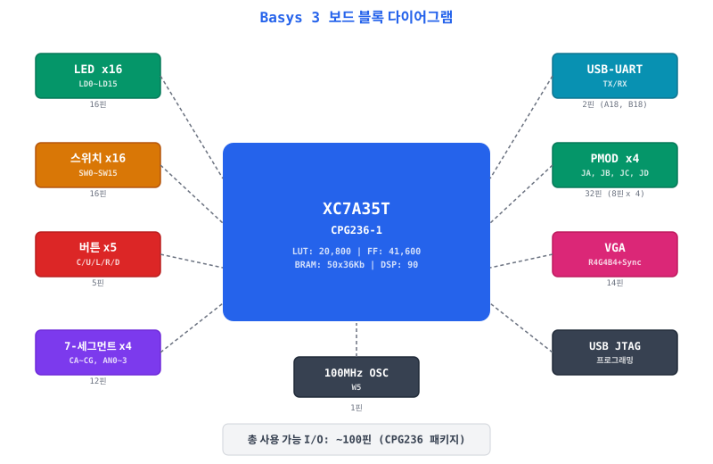
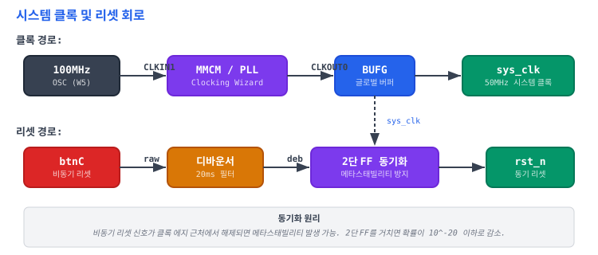

D.1 XC7A35T 리소스 요약
Basys 3 보드의 Artix-7 XC7A35TCPG236-1 FPGA 리소스 총량과 본 교재 프로젝트의 예상 사용량을 정리한다. 합성 시 리소스 사용률이 80%를 넘으면 배치배선 난이도가 급격히 증가하므로 70% 이하를 목표로 한다.
| 리소스 | 전체 개수 | 프로젝트 예상 | 사용률 | 비고 |
|---|---|---|---|---|
| CLB Slices | 5,200 | ~3,500 | ~67% | 각 Slice = 4 LUT + 8 FF |
| LUT (6-input) | 20,800 | ~13,000 | ~63% | 파이프라인+캐시+AMBA+주변장치 |
| Flip-Flop | 41,600 | ~8,000 | ~19% | 파이프라인 레지스터, FSM 상태 |
| Block RAM (36Kb) | 50 | ~15 | ~30% | IMEM + DMEM + I-Cache Data |
| Block RAM (18Kb) | 100 | ~0 (36Kb 사용) | ~0% | 18Kb 블록은 36Kb 반분할 |
| DSP48E1 | 90 | ~2 | ~2% | M 확장 곱셈기 (Ch24, 선택) |
| IOB (I/O Block) | 100 | ~60 | ~57% | LED+SW+BTN+SEG+UART |
| BUFG (Global Buffer) | 32 | 2 | ~6% | sys_clk + 가능 시 UART clk |
| MMCM | 5 | 1 | 20% | 100MHz → 50MHz 변환 |
BRAM 활용 계획
| 용도 | 크기 | 36Kb BRAM 수 | 챕터 |
|---|---|---|---|
| IMEM (명령어 메모리) | 16KB | 4 | Ch05 |
| DMEM (데이터 메모리) | 16KB | 4 | Ch05 |
| I-Cache Data Array | 4KB | 1 | Ch13 |
| Main Memory (시뮬레이션용) | 64KB | ~15 | Ch15 |
| I-Cache Tag | LUTRAM | 0 | Ch13 |
| D-Cache Data Array | LUTRAM | 0 | Ch14 |
| 합계 | ~15 (30%) |
D.2 Basys 3 보드 I/O 배치 개요
Basys 3 보드는 교육용으로 설계된 Artix-7 FPGA 개발 보드이다. LED, 스위치, 7-세그먼트 디스플레이, USB-UART 등 다양한 주변 장치가 내장되어 있다.

D.3 전체 핀 배치 표 (XDC 레퍼런스)
각 표의 XDC 열을 그대로 복사하여 제약 파일에 붙여 넣을 수 있다. 모든 I/O 표준은 LVCMOS33 (3.3V)이다.
D.3.1 LED (16개)
| 신호 | FPGA 핀 | I/O 표준 | XDC 구문 |
|---|---|---|---|
| led[0] | U16 | LVCMOS33 | set_property -dict {PACKAGE_PIN U16 IOSTANDARD LVCMOS33} [get_ports {led[0]}] |
| led[1] | E19 | LVCMOS33 | set_property -dict {PACKAGE_PIN E19 IOSTANDARD LVCMOS33} [get_ports {led[1]}] |
| led[2] | U19 | LVCMOS33 | set_property -dict {PACKAGE_PIN U19 IOSTANDARD LVCMOS33} [get_ports {led[2]}] |
| led[3] | V19 | LVCMOS33 | set_property -dict {PACKAGE_PIN V19 IOSTANDARD LVCMOS33} [get_ports {led[3]}] |
| led[4] | W18 | LVCMOS33 | set_property -dict {PACKAGE_PIN W18 IOSTANDARD LVCMOS33} [get_ports {led[4]}] |
| led[5] | U15 | LVCMOS33 | set_property -dict {PACKAGE_PIN U15 IOSTANDARD LVCMOS33} [get_ports {led[5]}] |
| led[6] | U14 | LVCMOS33 | set_property -dict {PACKAGE_PIN U14 IOSTANDARD LVCMOS33} [get_ports {led[6]}] |
| led[7] | V14 | LVCMOS33 | set_property -dict {PACKAGE_PIN V14 IOSTANDARD LVCMOS33} [get_ports {led[7]}] |
| led[8] | V13 | LVCMOS33 | set_property -dict {PACKAGE_PIN V13 IOSTANDARD LVCMOS33} [get_ports {led[8]}] |
| led[9] | V3 | LVCMOS33 | set_property -dict {PACKAGE_PIN V3 IOSTANDARD LVCMOS33} [get_ports {led[9]}] |
| led[10] | W3 | LVCMOS33 | set_property -dict {PACKAGE_PIN W3 IOSTANDARD LVCMOS33} [get_ports {led[10]}] |
| led[11] | U3 | LVCMOS33 | set_property -dict {PACKAGE_PIN U3 IOSTANDARD LVCMOS33} [get_ports {led[11]}] |
| led[12] | P3 | LVCMOS33 | set_property -dict {PACKAGE_PIN P3 IOSTANDARD LVCMOS33} [get_ports {led[12]}] |
| led[13] | N3 | LVCMOS33 | set_property -dict {PACKAGE_PIN N3 IOSTANDARD LVCMOS33} [get_ports {led[13]}] |
| led[14] | P1 | LVCMOS33 | set_property -dict {PACKAGE_PIN P1 IOSTANDARD LVCMOS33} [get_ports {led[14]}] |
| led[15] | L1 | LVCMOS33 | set_property -dict {PACKAGE_PIN L1 IOSTANDARD LVCMOS33} [get_ports {led[15]}] |
D.3.2 스위치 (16개)
| 신호 | FPGA 핀 | I/O 표준 | XDC 구문 |
|---|---|---|---|
| sw[0] | V17 | LVCMOS33 | set_property -dict {PACKAGE_PIN V17 IOSTANDARD LVCMOS33} [get_ports {sw[0]}] |
| sw[1] | V16 | LVCMOS33 | set_property -dict {PACKAGE_PIN V16 IOSTANDARD LVCMOS33} [get_ports {sw[1]}] |
| sw[2] | W16 | LVCMOS33 | set_property -dict {PACKAGE_PIN W16 IOSTANDARD LVCMOS33} [get_ports {sw[2]}] |
| sw[3] | W17 | LVCMOS33 | set_property -dict {PACKAGE_PIN W17 IOSTANDARD LVCMOS33} [get_ports {sw[3]}] |
| sw[4] | W15 | LVCMOS33 | set_property -dict {PACKAGE_PIN W15 IOSTANDARD LVCMOS33} [get_ports {sw[4]}] |
| sw[5] | V15 | LVCMOS33 | set_property -dict {PACKAGE_PIN V15 IOSTANDARD LVCMOS33} [get_ports {sw[5]}] |
| sw[6] | W14 | LVCMOS33 | set_property -dict {PACKAGE_PIN W14 IOSTANDARD LVCMOS33} [get_ports {sw[6]}] |
| sw[7] | W13 | LVCMOS33 | set_property -dict {PACKAGE_PIN W13 IOSTANDARD LVCMOS33} [get_ports {sw[7]}] |
| sw[8] | V2 | LVCMOS33 | set_property -dict {PACKAGE_PIN V2 IOSTANDARD LVCMOS33} [get_ports {sw[8]}] |
| sw[9] | T3 | LVCMOS33 | set_property -dict {PACKAGE_PIN T3 IOSTANDARD LVCMOS33} [get_ports {sw[9]}] |
| sw[10] | T2 | LVCMOS33 | set_property -dict {PACKAGE_PIN T2 IOSTANDARD LVCMOS33} [get_ports {sw[10]}] |
| sw[11] | R3 | LVCMOS33 | set_property -dict {PACKAGE_PIN R3 IOSTANDARD LVCMOS33} [get_ports {sw[11]}] |
| sw[12] | W2 | LVCMOS33 | set_property -dict {PACKAGE_PIN W2 IOSTANDARD LVCMOS33} [get_ports {sw[12]}] |
| sw[13] | U1 | LVCMOS33 | set_property -dict {PACKAGE_PIN U1 IOSTANDARD LVCMOS33} [get_ports {sw[13]}] |
| sw[14] | T1 | LVCMOS33 | set_property -dict {PACKAGE_PIN T1 IOSTANDARD LVCMOS33} [get_ports {sw[14]}] |
| sw[15] | R2 | LVCMOS33 | set_property -dict {PACKAGE_PIN R2 IOSTANDARD LVCMOS33} [get_ports {sw[15]}] |
D.3.3 버튼 (5개)
| 신호 | 위치 | FPGA 핀 | XDC 구문 |
|---|---|---|---|
| btnC | 중앙 | U18 | set_property -dict {PACKAGE_PIN U18 IOSTANDARD LVCMOS33} [get_ports btnC] |
| btnU | 상 | T18 | set_property -dict {PACKAGE_PIN T18 IOSTANDARD LVCMOS33} [get_ports btnU] |
| btnL | 좌 | W19 | set_property -dict {PACKAGE_PIN W19 IOSTANDARD LVCMOS33} [get_ports btnL] |
| btnR | 우 | T17 | set_property -dict {PACKAGE_PIN T17 IOSTANDARD LVCMOS33} [get_ports btnR] |
| btnD | 하 | U17 | set_property -dict {PACKAGE_PIN U17 IOSTANDARD LVCMOS33} [get_ports btnD] |
D.3.4 7-세그먼트 디스플레이
| 신호 | 설명 | FPGA 핀 | XDC 구문 |
|---|---|---|---|
| seg[0] (CA) | 세그먼트 A | W7 | set_property -dict {PACKAGE_PIN W7 IOSTANDARD LVCMOS33} [get_ports {seg[0]}] |
| seg[1] (CB) | 세그먼트 B | W6 | set_property -dict {PACKAGE_PIN W6 IOSTANDARD LVCMOS33} [get_ports {seg[1]}] |
| seg[2] (CC) | 세그먼트 C | U8 | set_property -dict {PACKAGE_PIN U8 IOSTANDARD LVCMOS33} [get_ports {seg[2]}] |
| seg[3] (CD) | 세그먼트 D | V8 | set_property -dict {PACKAGE_PIN V8 IOSTANDARD LVCMOS33} [get_ports {seg[3]}] |
| seg[4] (CE) | 세그먼트 E | U5 | set_property -dict {PACKAGE_PIN U5 IOSTANDARD LVCMOS33} [get_ports {seg[4]}] |
| seg[5] (CF) | 세그먼트 F | V5 | set_property -dict {PACKAGE_PIN V5 IOSTANDARD LVCMOS33} [get_ports {seg[5]}] |
| seg[6] (CG) | 세그먼트 G | U7 | set_property -dict {PACKAGE_PIN U7 IOSTANDARD LVCMOS33} [get_ports {seg[6]}] |
| dp | 소수점 | V7 | set_property -dict {PACKAGE_PIN V7 IOSTANDARD LVCMOS33} [get_ports dp] |
| an[0] | 자릿수 0 (우) | U2 | set_property -dict {PACKAGE_PIN U2 IOSTANDARD LVCMOS33} [get_ports {an[0]}] |
| an[1] | 자릿수 1 | U4 | set_property -dict {PACKAGE_PIN U4 IOSTANDARD LVCMOS33} [get_ports {an[1]}] |
| an[2] | 자릿수 2 | V4 | set_property -dict {PACKAGE_PIN V4 IOSTANDARD LVCMOS33} [get_ports {an[2]}] |
| an[3] | 자릿수 3 (좌) | W4 | set_property -dict {PACKAGE_PIN W4 IOSTANDARD LVCMOS33} [get_ports {an[3]}] |
D.3.5 UART, 클록, 기타
| 신호 | 설명 | FPGA 핀 | XDC 구문 |
|---|---|---|---|
| clk_100mhz | 100MHz 클록 | W5 | set_property -dict {PACKAGE_PIN W5 IOSTANDARD LVCMOS33} [get_ports clk_100mhz] |
| uart_rxd | UART 수신 | B18 | set_property -dict {PACKAGE_PIN B18 IOSTANDARD LVCMOS33} [get_ports uart_rxd] |
| uart_txd | UART 송신 | A18 | set_property -dict {PACKAGE_PIN A18 IOSTANDARD LVCMOS33} [get_ports uart_txd] |
D.4 시스템 클록 및 리셋 회로
Basys 3의 100MHz 온보드 오실레이터를 MMCM/PLL로 분주하여 50MHz 시스템 클록을 생성한다. 비동기 리셋(btnC)은 2단 플립플롭 동기화기를 거쳐 동기 리셋으로 변환한다.

왜 리셋을 동기화해야 하는가?
비동기 리셋 신호가 클록 상승 에지 근처에서 해제(deassert)되면, 플립플롭의 셋업/홀드 타임을 위반하여 메타스태빌리티(metastability)가 발생할 수 있다. 메타스태빌리티 상태의 플립플롭은 0도 1도 아닌 불확정 값을 출력하며, 이것이 다운스트림 로직으로 전파되면 시스템 전체가 예측 불가능한 상태에 빠진다.
2단 플립플롭 동기화기를 사용하면, 첫 번째 FF에서 메타스태빌리티가 발생하더라도 한 클록 사이클 내에 해소될 확률이 매우 높아(MTBF > 10^20년) 두 번째 FF의 출력은 안정된 0 또는 1이 된다.
클록 생성기 코드
// MMCME2_BASE: 100MHz → 50MHz
// VCO = 100MHz × 10 = 1000MHz
// CLKOUT0 = 1000MHz / 20 = 50MHz
MMCME2_BASE #(
.CLKIN1_PERIOD (10.000),
.CLKFBOUT_MULT_F (10.000),
.DIVCLK_DIVIDE (1),
.CLKOUT0_DIVIDE_F (20.000)
) mmcm_inst (
.CLKIN1 (clk_100mhz),
.RST (rst_raw),
.CLKFBIN (clk_fb),
.CLKFBOUT (clk_fb),
.CLKOUT0 (clk_out0_unbuf),
.LOCKED (locked),
.PWRDWN (1'b0)
// ... 미사용 출력 생략
);
BUFG bufg_inst (
.I (clk_out0_unbuf),
.O (clk_50mhz)
);
리셋 동기화기 코드
// 2단 FF 리셋 동기화기
// 비동기 어서트 + 동기 디어서트
(* async_reg = "true" *) logic rst_meta;
(* async_reg = "true" *) logic rst_sync_reg;
always_ff @(posedge clk or negedge rst_async_n) begin
if (!rst_async_n) begin
rst_meta <= 1'b0; // 비동기 리셋: 즉시 활성화
rst_sync_reg <= 1'b0;
end else begin
rst_meta <= 1'b1; // 동기 해제: 2단 통과
rst_sync_reg <= rst_meta;
end
end
assign rst_sync_n = rst_sync_reg;
D.5 프로젝트 리소스 사용량 이력
각 챕터의 설계를 Basys 3에 합성한 결과를 비교한다. 이 표는 실제 Vivado 합성 결과로 채울 수 있도록 템플릿 형태로 제공한다.
| 챕터 / 구성 | LUT | FF | BRAM | DSP | Fmax (MHz) | WNS (ns) |
|---|---|---|---|---|---|---|
| Ch06: 단일사이클 CPU | ~2,500 | ~200 | 8 | 0 | ~25 | — |
| Ch08: 멀티사이클 CPU | ~2,200 | ~400 | 8 | 0 | ~50 | — |
| Ch12: 파이프라인 CPU | ~4,500 | ~2,000 | 8 | 0 | ~65 | — |
| Ch13: + I-Cache | ~5,500 | ~2,200 | 9 | 0 | ~60 | — |
| Ch14: + D-Cache | ~7,500 | ~2,800 | 9 | 0 | ~55 | — |
| Ch15: + 메모리 컨트롤러 | ~8,500 | ~3,200 | 15 | 0 | ~55 | — |
| Ch17: + AMBA + 주변장치 | ~11,000 | ~5,500 | 15 | 0 | ~50 | — |
| Ch22: 최종 SoC | ~13,000 | ~8,000 | 15 | 0 | ~50 | — |
위 수치는 예상값이며, 실제 합성 결과는 코드 최적화 수준, Vivado 합성 전략, 제약 조건에 따라 달라진다.
WNS 열은 합성 후 report_timing_summary에서 확인하여 기입한다.
전체 소스 코드
이 부록에서 소개한 클록 생성기와 리셋 동기화기의 완전한 소스 코드이다. Chapter 01(환경 구축) 이후 모든 프로젝트에서 재사용할 수 있다.
SVapp_d_clk_gen.sv
module clk_gen (
input logic clk_100mhz,
input logic rst_raw,
output logic clk_50mhz,
output logic locked
);
logic clk_fb;
logic clk_out0_unbuf;
MMCME2_BASE #(
.CLKIN1_PERIOD (10.000),
.CLKFBOUT_MULT_F (10.000),
.DIVCLK_DIVIDE (1),
.CLKOUT0_DIVIDE_F (20.000),
.CLKOUT0_PHASE (0.000)
) mmcm_inst (
.CLKIN1 (clk_100mhz),
.RST (rst_raw),
.CLKFBIN (clk_fb),
.CLKFBOUT (clk_fb),
.CLKOUT0 (clk_out0_unbuf),
.LOCKED (locked),
.CLKOUT0B (), .CLKOUT1 (), .CLKOUT1B (),
.CLKOUT2 (), .CLKOUT2B (), .CLKOUT3 (),
.CLKOUT3B (), .CLKOUT4 (), .CLKOUT5 (),
.CLKOUT6 (), .CLKFBOUTB(), .PWRDWN (1'b0)
);
BUFG bufg_inst (.I(clk_out0_unbuf), .O(clk_50mhz));
endmodule
SVapp_d_rst_sync.sv
module rst_sync (
input logic clk,
input logic rst_async_n,
output logic rst_sync_n
);
(* async_reg = "true" *) logic rst_meta;
(* async_reg = "true" *) logic rst_sync_reg;
always_ff @(posedge clk or negedge rst_async_n) begin
if (!rst_async_n) begin
rst_meta <= 1'b0;
rst_sync_reg <= 1'b0;
end else begin
rst_meta <= 1'b1;
rst_sync_reg <= rst_meta;
end
end
assign rst_sync_n = rst_sync_reg;
endmodule